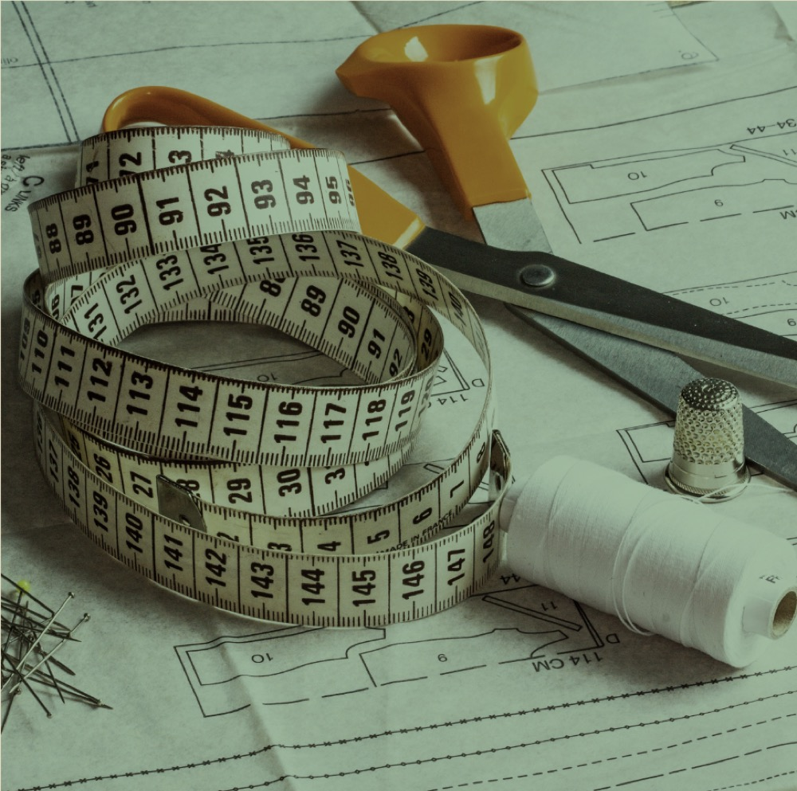
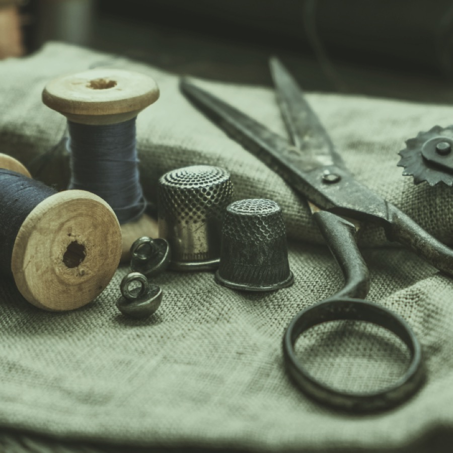

01
Alterations
Hems and sleeves shortened, waists taken in or let out, garments tapered and reshaped to your body. Every alteration is pinned on you first, so the fit is agreed before the first stitch.
Three kinds of work leave the workroom: alterations that perfect the fit, repairs that save the garment, and reconstructions that reinvent it.

01
Hems and sleeves shortened, waists taken in or let out, garments tapered and reshaped to your body. Every alteration is pinned on you first, so the fit is agreed before the first stitch.

02
Split seams, torn linings, missing buttons and broken zips, mended so well you'll forget where the damage was. A favourite piece shouldn't be retired over a small repair.
03
Vintage finds resized, inherited pieces reimagined, dated cuts modernised. Bring the idea and our tailors will tell you honestly what the garment can become.
Guide prices
Your exact price is confirmed when a tailor has seen the garment, always before any work begins.
Common questions
Ready when you are
Walk in any time we're open: Monday to Friday 9am to 5pm, Saturday 10am to 3pm.